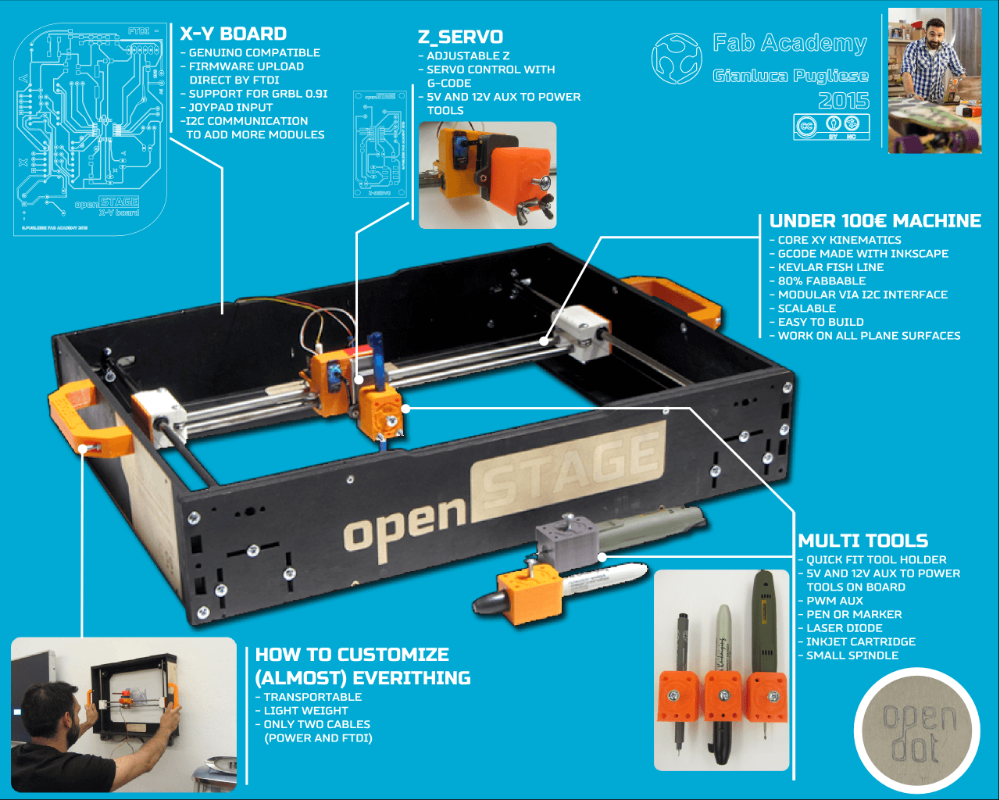

Hello World

OpenSTAGE is finally born
At the moment the machine work very well, without backlash because I found a perfectfishline that is quite impossible to extend, I also bought a kevlar fishline for next esperiments.
All the parts of the project are described well in the various page that you can find in Final Project menu
The final files are here:
CARRIAGE : stl file to 3D print the carriage
MAINBOARD : eagle file to make the main pcb
Z SERVO: eagle file to make te servo board
GRBL: GRBL library to copy in Arduino library directory
INKSCAPE PLUGIN: this is the modified Unicorn plugin to work with OpenStage, Just unzip and copy the folder in the Inkscape extension folder
The rest of the BOM are
2 STEPPER MOTOR NEMA17
2 POLOLU DRIVER
8 624 BEARING
10 METER KEVLAR FISHLINE
1 9g MICRO SERVO
Here some close up picture of the final version
Y and X carriage with z Servo board
X carriage with complete Z stage
GOAL
The best goal of my project is that is possible to draw something in Inkscape and exporting the gcode via modified Unicorn Plugin
then you can open the gcode with a gcode sender like GRBL CONTROLLER and send via serial to the machine
here an example:
Draw OpenStage in Inkscape and I saved the gcode with modified Unicorn Plugin
Import the gcode in GRBL CONTROLLER
Open the serial communication with the right COM port and the correct Baudrate (115200 in my case)
and push "begin" button
I tried some tools on the machine and this is the result:
Dual layer drawing: pen and conductive ink
one lyer with classical pen and the simple with Agic conductive penThis is the result:
Wood
on the wood with a little Proxxton spindle work well just to engrave a soft woodFR1FR4
At the moment the machine don't work well on pcb because I haven't the correct tipSoft metal
Working on alluminium the machine work quite well, during the circle the spindle was stressed much and so the circle is more like an ellipse.The good things is that the text was engraved perfecly!

Fine testing
Drow with a pencil, the file was to big for the print area and at the final the steppers loses some stepOpenStage beta 1 version draw with a pen a circuit
Drawing with a Stadleter 0.05mm is possible to appreciate the quality of the precision
Z servo axis
The big improvement for this project was the structure and the electronics for the Z servo axis thah you can see below
Below a video that show the change tool system and the Z adjustment